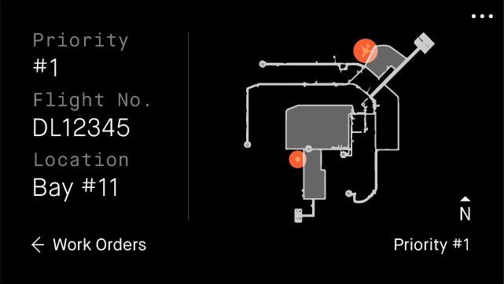
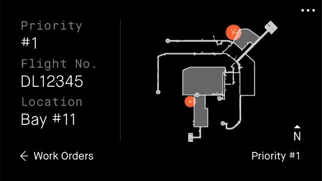
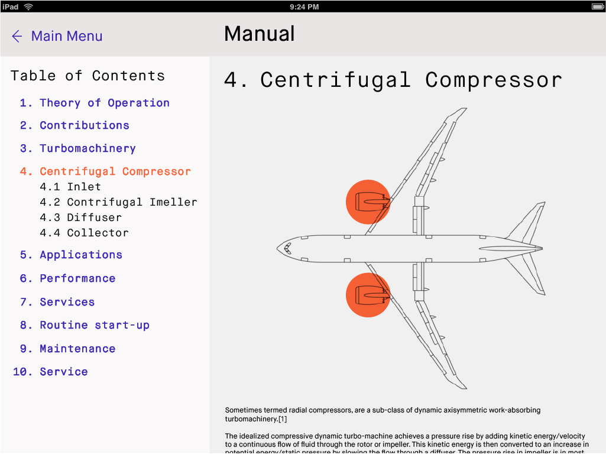
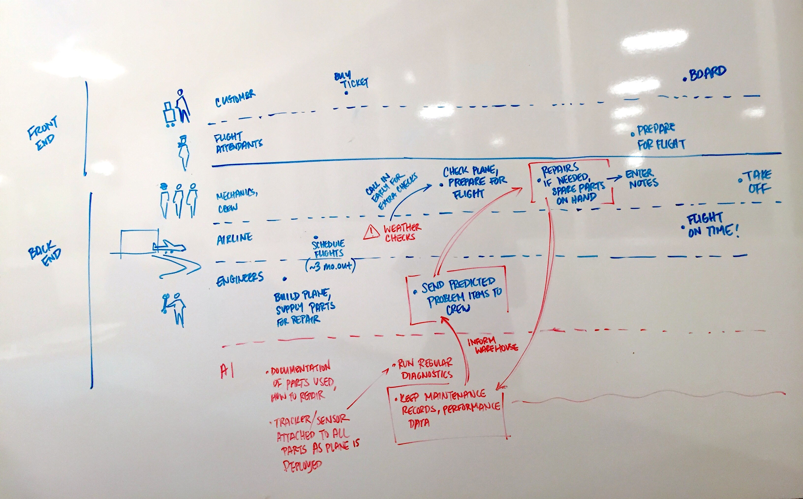
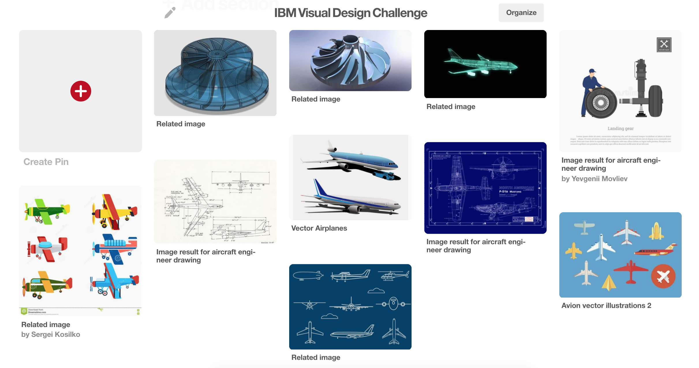
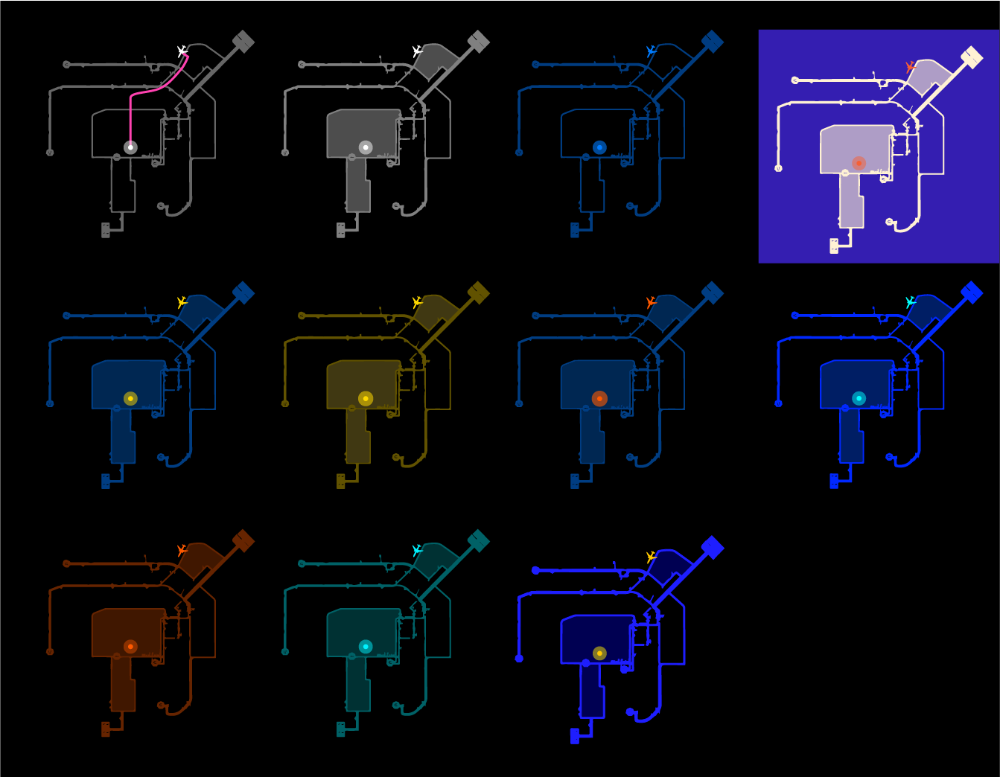
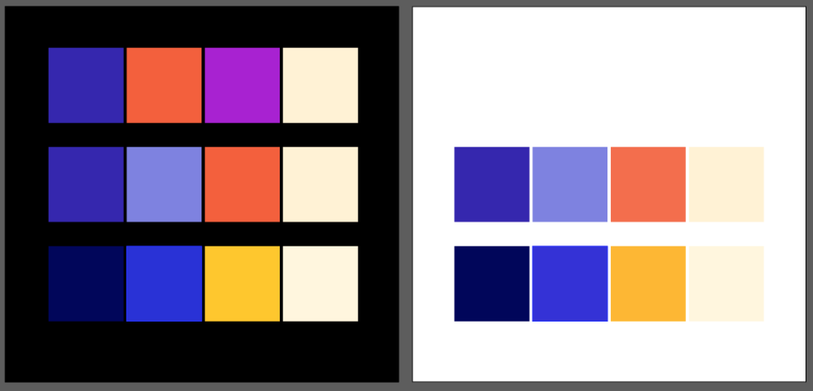
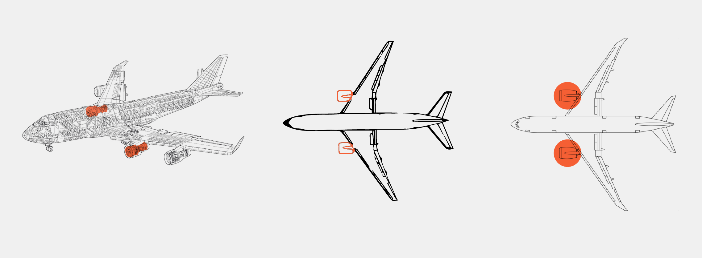

IBM Design Challenge
Challenge
Design a digital solution to provide predictive maintenance insights for an airline mechanic. It should allow the mechanic to access multiple data sources in real time to predict asset failure or quality issues to avoid costly down-time and reduce maintenance costs.
Outcome
A style guide for a digital tool that delivers work orders and help manuals, all accessible on mobile, tablet, and eyewear platforms for mechanics whose hands are often occupied. My full process documentation can be found here.
Skills Practiced
User research
Visual design
User experience design
Final Style Guide
Final Components
Glass
 

Mobile
Tablet
Process: Solution Features
Understanding the Problem
To begin, I drew something of a service blueprint to understand the front and back end interactions that occur to get a plane from manufacturing to takeoff. This diagram is not comprehensive, but it helped me get a rough understanding of where AI might fit into the system.
Contextual Research
I conducted some online research on the conditions that aircraft mechanics work with. Their work environments include hangars, airfields, and repair stations.
- loud environment due to engines and equipment
- hands full/busy
- mechanics might be spread out over the aircraft — each should be able to update others on his task status
- repair procedures questions can come up during maintenance — be able to look things up in the middle of another procedure
Existing Technologies
From this research, I was able to set some constraints on the form of the digital repair tool. I felt that touch and gesture commands were tricky because the mechanic’s hands would be occupied. I also considered a wearable device on the mechanic's wrist, since his hands would be in front of him while working, but the display might be too small.
In the end, I liked the idea of smart glasses, which could superimpose on the environment, making for more visual instructions. They would also allow for hands-free voice command. I consulted Google’s documentation to understand the types of inputs that currently exist for Google Glass, which would inform elements of the user interface I would design.
Storyboard
- Weather monitoring alerts crew of a storm approaching Boston. The crew checks the schedule for flights passing through the storm.
- Manager issues work orders to his team. Some are deployed to ensure soon-to-depart flights are safe to fly, some to prepare to meet landing flights based on their real time data.
- Experience 1: Tim the Mechanic checks his work orders—he starts with priority #1, flight DL12345 located in Bay #11, scheduled to fly in 12 hours.
- Experience 2: He checks the IoT sensor logs, which give him a list of items to inspect. He looks at the centrifugal compressor first, the most pressing matter determined by the AI, and finds what is causing the leak. He identifies the part that needs to be replaced, sees it’s in the warehouse and puts in a request to bring it over.
- Experience 3: The parts are brought to Tim. He consults the digital repair manual as he repairs the leak, finishing quickly using step by step videos and on-demand information. He enters some notes, and updates the central system about his completion status. In turn, his manager and the team are updated on the status of the centrifugal compressor.
- Flight DL12345 is ready to take off on time.
Wireframes
I identified various interfaces that would support this narrative:
- Glass UI
- Tablet/mobile UI, for a larger display for text-heavy information or videos
Knowing what devices informed what kinds of screens I would design for, and what visual components I would need to consider. For example, how do I show navigation? How do I indicate what’s clickable? For different devices, how would I use layout and typography to convey information consistently?
Journey Map
The new journey map (blue) addresses several pain points from the old (brown):
- Mountains of paper manuals, difficult for a mechanic to identify and diagnose a problem.
- Digitalized manuals
- Hands-free
- Follow step-by-step procedures easily on a screen
- Can also find how-to’s for specific and relevant information with voice command Web search. Useful for unexpected problems that come up
- No centralized digital diagnostic tool. Mechanics must rely on experience and intuition rather than data.
- IoT sensors record flight data and mechanical history, logs are kept in a central system
- Sensor logs and previous notes give mechanics tips on where to look first
- No out of date manuals, and maintenance procedures are optimal and standardized
- No current use of AI to optimize supply chain.
- Use of AI optimizes supply chain by ensuring needed parts are in stock
- Predictive measures based on which parts are likely to need repair based on weather, flight conditions, etc.
- Fewer delays on repairs, fewer aircrafts pulled from circulation

Process: Visual Design
Mood Board
I chose a visual style that was a mix of the engineer drawings (4th column bottom), holographic wire model (4th column top) and simple line vector art (middle bottom).
I wanted the visual style should have a serious and professional feel, because the mechanic’s work holds real weight in ensuring the safety of passengers and crew. At the same time, I wanted to simplify it from full on engineer drawings to make it look more approachable to a mechanic who doesn’t necessarily need all the measurements.
Grid
Building off of Google Glass’ scrollable “cards” interface, I hypothesized that a mechanic could use a similar interface to keep track of work orders, digital manuals, etc. I used their style guides to understand more about the scale and legibility of text, image and icon usage.
I was unfamiliar with Glass interfaces, so I tried several different layouts to see which column widths felt most comfortable to me. I liked the balance of content space and margins the best in the last one. I also created grids for responsiveness.
Colors
I played with colors keeping in mind that augmented displays like Google Glass would show up against objects in the real world. Also considering that I often saw mechanics working with flashlights in dark environments, I considered both dark and light backgrounds.
 Components, Style, Treatment
Diagrams
Exploring how to visualize plane diagrams, what fidelity and style, to best highlight parts to make it easy for the mechanic to find the problem.
Iconography
I explored icon styles that could be cohesive for both mobile and Glass interfaces. For Glass, the challenge was the limited screen space and using visual indicators that users can’t touch.
Typograpahy
Results
This design passed IBM's Design Challenge round.